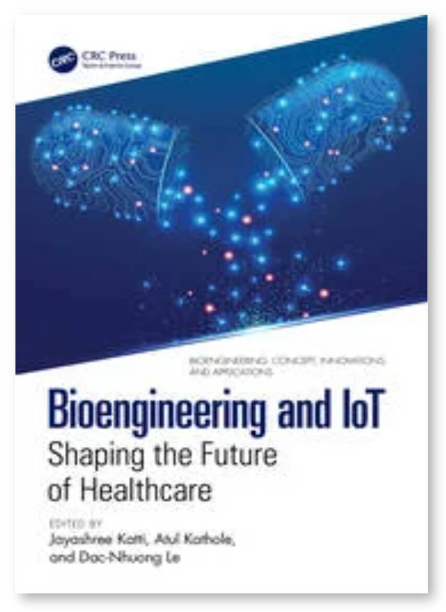
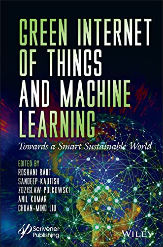

Books Published


Mrs. Anuja R Jadhav, Dr. Roshani Y Raut, Dr. Sonali D Patil
Publisher : Lambert Academic Publishing, USA
Book Chapter details
|
Sr. No. |
Title of Book/ Book Chapter |
Authors |
Title of Book with Link |
|
Academic Year 2024-25 |
|||
|
1 |
Computational Approaches in Biotechnology and Bioinformatics |
Dr. Roshani Y. Raut |
|
|
2 |
Computational Approaches in Biomaterials and Biomedical Engineering Applications |
Dr. Roshani Y. Raut |
|
|
3 |
A Voice-Assisted Email Service with Computer Vision Techniques for Visually Challenged People |
Dr. Rajesh N. Phursule |
Cognitive Connections: Unleashing the Potential of Interactive Technologies
|
|
4 |
The Future of Urban Mobility: Innovations and Challenges in ITS |
Dr. Rajesh N. Phursule |
Urban Mobility and Challenges of Intelligent Transportation System https://www.igi-global.com/chapter/the-future-of-urban-mobility/375291 |
|
5 |
Safe and Reliable Smart City Design Based on Blockchain Technology
|
Dr. Gulbakshee J. Dharmale
|
Digital Twin and Blockchain for Smart Cities |
|
6 |
Parallel and High-Performance Computing in Artificial Intelligence |
Raut Roshani |
|
|
7 |
High-Performance Computing |
Raut Roshani |
Parallel and High-Performance Computing in Artificial Intelligence |
|
Academic Year 2023-24 |
|||
|
1 |
Use of Computer Vision Techniques in Healthcare Using MRI Images |
Dr. Sonali Patil Dr. Atul Kathole Dr. Kapil Vhatkar Dr. Roshani Raut |
Image Processing and Intelligent Computing Systems https://www.taylorfrancis.com/chapters/edit/10.1201/9781003267782-3/use-computer-vision-techniques-healthcare-using-mri-images-sonali-patil-atul-kathole-kapil-vhatkar-roshani-raut |
|
2 |
Pest identification and classification using IoT enable technique |
Dr. Atul Kathole Dr. Sonali Patil Dr. Kapil Vhatkar |
Internet of Things in Modern Computing https://www.taylorfrancis.com/chapters/edit/10.1201/9781003407300-11/pest-identification-classification-using-iot-enable-technique-atul-kathole-sonali-patil-kapil-vhatkar-dinesh-chaudhari-avinash-jadhav |
|
3 |
Leveraging Blockchain in Sharing and Managing Health Record Credential |
Dr. Atul Kathole Dr. Sonali Patil |
Blockchain for Healthcare 4.0 https://www.taylorfrancis.com/chapters/edit/10.1201/9781003408246-10/leveraging-blockchain-sharing-managing-health-record-credential-atul-kathole-sonali-patil-vinod-kimbahune-avinash-jadhav |
|
4 |
Digital Twins Internet of Things, Machine Learning, and Smart Manufacturing |
Dr. Roshani Raut |
Digital Twins Internet of Things, Machine Learning, and Smart Manufacturing |
|
5 |
Automated smart billing cart for fruits |
Mrs. Tanuja Patankar |
Intelligent Systems and Applications in Computer Vision https://www.taylorfrancis.com/chapters/edit/10.1201/9781003453406-21/automated-smart-billing-cart-fruits-tanuja-patankar-abhishek-bharane-vinay-bhosale-pranav-bongulwar-onakar-mulay |
|
6 |
AI Based Medicine Intake Tracker |
Dr. Gulbakshee Dharmale |
Nature-Inspired Methods for Smart Healthcare Systems and Medical Data https://link.springer.com/chapter/10.1007/978-3-031-45952-8_2 |
|
7 |
Landscape of Serverless Computing Technology and IoT Tools in the IT Sectors |
Dr. Maya Bembde |
Emerging Technologies for Securing the Cloud and IoT https://www.igi-global.com/chapter/landscape-of-serverless-computing-technology-and-iot-tools-in-the-it-sectors/343338 |
|
Academic Year 2022-23 |
|||
|
1 |
Blockchain-Based Secure Evidence-Management Police Assistance System |
Dr. Sonali Patil Dr. Rohini Pise |
Blockchain for Smart Systems https://www.taylorfrancis.com/chapters/edit/10.1201/9781003203933-13/blockchain-based-secure-evidence-management-police-assistance-system-sonali-patil-rohini-pise |
|
2 |
Machine-Learning Techniques for Deaf People |
Dr. Roshani Raut |
Machine Learning Algorithms for Signal and Image Processing https://doi.org/10.1002/9781119861850.ch11 |
|
3 |
A Deep Dive into Blockchain Consensus Algorithms |
Dr. Rohini Pise Dr. Sonali Patil |
Blockchain for Smart Systems https://www.taylorfrancis.com/chapters/edit/10.1201/9781003203933-7/deep-dive-blockchain-consensus-algorithms-nupur-kulkarni-rohini-pise-sonali-patil |
|
4 |
Image Editing Using Generative Adversarial Network |
Dr. Roshani Raut Dr. Sonali Patil |
Generative Adversarial Networks and Deep Learning https://www.taylorfrancis.com/chapters/edit/10.1201/9781003203964-3/image-editing-using-generative-adversarial-network-anuja-jadhav-chaitrali-sorde-swati-jaiswal-roshani-raut-atul-kathole |
|
5 |
Generative Adversarial Networks for Video-to-Video Translation |
Dr. Roshani Raut |
Generative Adversarial Networks and Deep Learning https://www.taylorfrancis.com/chapters/edit/10.1201/9781003203964-4/generative-adversarial-networks-video-video-translation-yogini-borole-roshani-raut |
|
6 |
Security Issues in Generative Adversarial Networks |
Dr. Atul Kathole Dr. Kapil Vhatkar Dr. Roshani Raut Dr. Sonali Patil Dr. Anuja Jadhav |
Generative Adversarial Networks and Deep Learning https://www.taylorfrancis.com/chapters/edit/10.1201/9781003203964-5/security-issues-generative-adversarial-networks-atul-kathole-kapil-vhatkar-roshani-raut-sonali-patil-anuja-jadhav |
|
7 |
Comprehensive Overview of Autonomous Vehicles and Their Security Against DDoS Attacks |
Dr. Anuja Jadhav |
Applications of Machine Learning and Deep Learning for Privacy and Cybersecurity |
|
Academic Year 2021-22 |
|||
|
1 |
Extreme Gradient Boosting for Predicting Stock Price Direction in Context of Indian Equity Markets |
Mr. Sachin Jadhav |
Intelligent Sustainable Systems https://link.springer.com/chapter/10.1007/978-981-16-6369-7_28 |
|
2 |
Accelerating Polynomial-Based Image Secret Sharing Using Hadoop |
Dr. Sonali Patil Dr. Roshani Raut Mrs. Chaitrali Sorte |
Emergent Converging Technologies and Biomedical Systems https://link.springer.com/chapter/10.1007/978-981-16-8774-7_6 |
|
3 |
Data Accountability and Security Enhancement in Remote Healthcare System Using BaaS |
Dr. Sonali Patil Dr. Rohini Pise |
Information and Communication Technology for Competitive Strategies https://link.springer.com/chapter/10.1007/978-981-16-0882-7_67 |
Books Published
| Sr. No. | Name of the Author | Book Name | Publisher |
|---|---|---|---|
| 1 | Dr. Roshani Y Raut | Green Internet of Things and Machine Learning | Wiley-Scrivener; 1st edition (4 February 2022) |
| 2 | Dr. Roshani Y Raut | Intelligent Systems for Rehabilitation Engineering | Wiley-Scrivener; 1st edition (21 April 2022) |
| 3 | Dr. Roshani Y Raut | The Impact of Deep Learning on IoT and multi-industry applications | IGI Global, USA |
| 4 | Mrs. Anuja R Jadhav Dr. Roshani Y Raut Dr. Sonali D Patil | Computer Architecture and Organization | Lambert Academic Publishing, USA |
| 5 | Ms. Spurti Shinde Ms. Anuja R Jadhav Dr. Roshani Y Raut | Computer Programming & Problem Solving- I | Nirali Publication, India |
| 6 | Dr. R. N. Phursule | Discrete Mathematics SE | Technical Publication, India |
| 7 | Dr. R. N. Phursule | Operating System and Administration SE | Nirali Publication, India |
| 8 | Dr. R. N. Phursule | Theory of Computation | Nirali Publication, India |